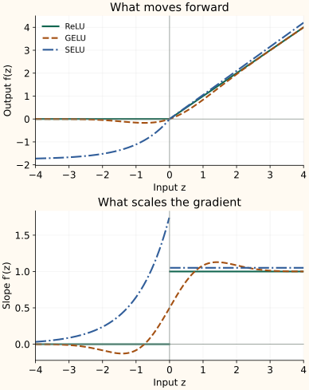

GELU and SELU: Gaussian Weighting and Self-Normalizing Scale
ReLU uses a hard rule: keep a positive input and discard a negative one. GELU replaces that switch with a smooth Gaussian-CDF weight, while ELU and SELU reshape the negative branch with a saturating exponential and choose constants that target self-normalizing hidden statistics.
What does the Gaussian CDF mean in GELU?
Let $Z$ be a standard normal random variable, with mean zero and variance one. Its cumulative distribution function is $\Phi(z)=P(Z\leq z)$: the area under the normal curve to the left of $z$.
The CDF increases smoothly from zero to one and equals $1/2$ at zero. GELU multiplies the input by this weight:
The Gaussian reference defines a deterministic function. Applying GELU does not sample a random mask or require the actual activations to follow a normal distribution. The definition comes from Hendrycks and Gimpel.
Differentiate both parts of the GELU product
Write the standard normal density as $\phi(z)$. It is the derivative of the CDF:
The product rule differentiates the input and then the weight:
The first term keeps the original weight; the second accounts for how that weight changes with the input. The slope is $1/2$ at zero. It can be negative on part of the negative side and slightly greater than one on the positive side. A weight between zero and one does not constrain the slope to that range.
Exact GELU and the tanh approximation
The exact CDF can be expressed using the error function:
A common approximation first forms $u(z)$ and then uses tanh:
They are close but not identical. If you use the approximation, its backward pass must differentiate that approximation. Record the choice when comparing checkpoints or implementations; the Keras GELU API exposes it explicitly.
ELU and SELU: exponential negative branch and self-normalizing scale
Instead of multiplying $z$ by a smooth gate, ELU keeps the positive identity branch and uses a saturating exponential branch below zero for $\alpha>0$:
The negative branch approaches $-\alpha$, which can reduce the positive mean shift created by ReLU without guaranteeing zero mean. Its slope is $\alpha e^z$ for $z<0$ and 1 for $z>0$; the left and right slopes meet at zero only when $\alpha=1$.
SELU uses the same branch structure with fixed constants $\alpha$ and $\lambda$:
These constants were chosen so that a mean-and-variance mapping has a stable fixed point near mean zero and variance one under the assumptions of self-normalizing networks. The claim applies to a network setup, not just to inserting this function anywhere.
The intended recipe uses suitable feed-forward layers, appropriately scaled inputs, and LeCun-style initialization with weight variance $1/n_{\mathrm{in}}$. If dropout is used, AlphaDropout is designed to preserve the relevant moments. Ordinary dropout, arbitrary residual additions, and other architectural changes can break that argument.
Compare values and curves side by side
At $z=1$, $\Phi(1)\approx0.8413$, so GELU outputs about 0.8413 while SELU scales the positive input by $\lambda\approx1.0507$. At $z=-1$, GELU gives $-0.1587$ (returning toward zero far to the left), whereas SELU saturates toward $-\lambda\alpha\approx-1.7581$:
| Function | −1 | 0 | 1 |
|---|---|---|---|
| ReLU | 0.0000 | 0.0000 | 1.0000 |
| GELU | -0.1587 | 0.0000 | 0.8413 |
| ELU (alpha=1) | -0.6321 | 0.0000 | 1.0000 |
| SELU | -1.1113 | 0.0000 | 1.0507 |


Advantages and disadvantages
| Function | Advantages | Disadvantages |
|---|---|---|
| GELU | Smooth output and derivative, a small negative response instead of ReLU's hard cutoff, and a positive tail that approaches the identity. | Negative-tail gradients can still become tiny; the function is not monotonic and its slope can be negative or exceed one. Exact and approximate implementations differ. |
| ELU | Retains negative outputs while keeping a linear positive branch. Negative values can reduce ReLU's positive output mean. | The negative branch saturates and its derivative becomes small. It needs an exponential, and its slopes meet at zero only when $\alpha=1$. |
| SELU | Can stabilize activation means and variances when the self-normalizing assumptions, LeCun initialization, and architecture match. | Not a plug-in normalization guarantee: ordinary dropout or architectural changes can break the recipe. Its negative tail saturates, and standard SELU has a corner at zero. |
Where each choice fits
GELU is a standard hidden-layer activation in modern transformers where explicit normalization layers (LayerNorm or RMSNorm) already stabilize scale. SELU is a coordinated initialization-and-architecture choice for feed-forward networks without explicit normalization. Neither produces class probabilities; start from the activation expected by a pretrained model and verify activation statistics when modifying an architecture.
SiLU, Swish, and Mish follow the same input-times-weight idea as GELU, using sigmoid or tanh-Softplus instead of the Gaussian CDF.